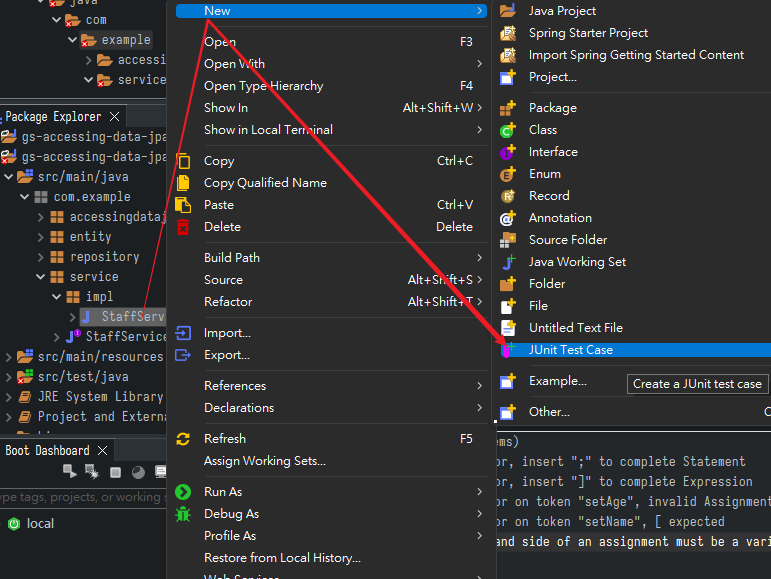
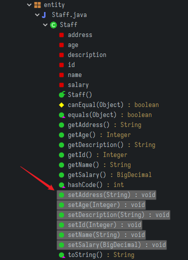
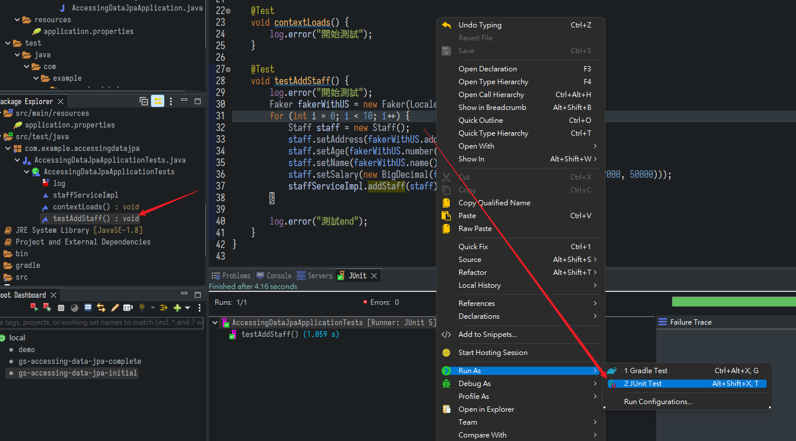
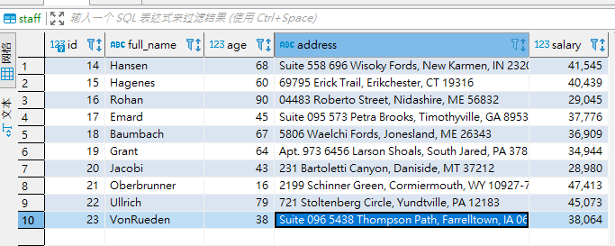

用Javafaker產生假資料
順便練習PostgreSQL、JPA、Gradle
填充模板資料
工作上遇到的情境，業務要推銷軟體產品，需要做一個Demo展示，有個功能是可以顯示精美的圖形報表，那總不可能自己一筆一筆輸入資料
- 使用的技術有PostgreSQL、JPA、Javafaker、Gradle
- 其實單純是我目前工作上即將用到的技術
PostgreSQL
-
資料庫，開源免費，社群愛用
-
直接docker拉一個
docker pull postgres:10-alpine
docker run -p 5432:5432 --name postgres --restart=always -e POSTGRES_USER=postgres -e POSTGRES_PASSWORD=postgres -d postgres:10-alpine
- 隨便建一個表
CREATE TABLE public.staff (
id int8 NOT NULL,
full_name text NOT NULL,
age int4 NOT NULL,
address bpchar(150) NULL,
salary numeric NULL,
CONSTRAINT company_pkey PRIMARY KEY (id)
);
Eclipse + Gradle + Lombok
- 首先確定Eclipse有裝好Lombok，沒有的話去官網下載
- 裝好會是這樣的

- 然後進到gradle專案的
build.gradle
dependencies {
compileOnly 'org.projectlombok:lombok:1.18.22'
annotationProcessor 'org.projectlombok:lombok:1.18.22'
}
Javafaker
- https://github.com/DiUS/java-faker
- 非常神奇的工具，能夠自動產生多種資料(姓名、電話、地址…甚至寶可夢)，且支援多國在地化，包含台灣中文
參考程式碼
build.gradle
plugins {
id 'org.springframework.boot' version '2.6.3'
id 'io.spring.dependency-management' version '1.0.11.RELEASE'
id 'java'
}
group = 'com.example'
version = '0.0.1-SNAPSHOT'
sourceCompatibility = '1.8'
repositories {
mavenCentral()
}
dependencies {
implementation 'org.springframework.boot:spring-boot-starter-data-jpa'
runtimeOnly 'com.h2database:h2'
testImplementation 'org.springframework.boot:spring-boot-starter-test'
implementation 'org.postgresql:postgresql'
implementation 'com.github.javafaker:javafaker:1.0.2'
compileOnly 'org.projectlombok:lombok:1.18.22'
annotationProcessor 'org.projectlombok:lombok:1.18.22'
}
test {
useJUnitPlatform()
}
application.properties
# 數據庫基本資訊配置
spring.datasource.url=jdbc:postgresql://127.0.0.1:5432/postgres
spring.datasource.username=postgres
spring.datasource.password=postgres
spring.jpa.show-sql=true
# JPA相關配置
spring.jpa.database=postgresql
spring.jpa.hibernate.ddl-auto=update
spring.jpa.properties.hibernate.dialect=org.hibernate.dialect.PostgreSQL9Dialect
spring.jpa.properties.hibernate.temp.use_jdbc_metadata_defaults = false
entity
@Entity(name = "staff")
@Data
public class Staff {
@Id // 主鍵且自增
@GeneratedValue(strategy = GenerationType.AUTO)
private Integer id;
@Column(name = "full_name", nullable = true) // 屬性與表欄位名不同
private String name;
private Integer age;
private String address;
private BigDecimal salary;
@Transient // 不存在表中
private String description;
}
repository
- 可以用內建封裝好的方法，也可以自己寫SQL拼接
@Repository
public interface StaffRepository extends JpaRepository<Staff, Integer> {
List<Staff> getStaffsByAgeStartingWith(Integer age);
@Query(value = "select * from staff where id > :id and age = :age", nativeQuery = true)
List<Staff> getStaffByIdAndAge(@Param("age") Integer age, @Param("id") Integer id);
}
service
@Service
public class StaffServiceImpl implements StaffService {
@Autowired
StaffRepository staffRepository;
@Override
public void addStaff(Staff staff) {
staffRepository.save(staff);
}
}
快速生成測試類

生成所有setter
唉Eclipse這功能也沒有，無言
- 比較可行的方法是，找到那個entity，點開查看它的方法，把setter全選然後
ctrl+c整個複製走，再用多游標的方式修整

單元測試
- Javafaker的用法很簡單，造一個
Faker類，建構時填入區域。然後在setter中盡情使用
@Test
void testAddStaff() {
log.error("開始測試");
Faker fakerWithUS = new Faker(Locale.US);
for (int i = 0; i < 10; i++) {
Staff staff = new Staff();
staff.setAddress(fakerWithUS.address().fullAddress());
staff.setAge(fakerWithUS.number().numberBetween(1, 100));
staff.setName(fakerWithUS.name().lastName());
staff.setSalary(new BigDecimal(fakerWithUS.number().numberBetween(22000, 50000)));
staffServiceImpl.addStaff(staff);
}
log.error("測試end");
}
- 執行指定的測試方法，在package explore找到那個測試方法，或是直接在方法的區塊內點右鍵

- 察看結果，完美

上次修改於 2022-02-28